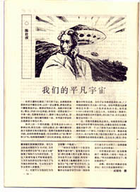

Chinese SF Chinese SF
Science fiction literature and culture are on the rise again in China, for the third time this century. Originally introduced to the Chinese audience by literary giants such as Lu Xun and Mao Dun, who translated works by Verne and Wells into Chinese at the beginning of the century, the genre remains strictly defined the works of these two authors, representing the "hard science" vs. "psychological" directions of SF.

Although famous writers like Lao She (in "City of cats") tried their hands on this new kind of literature, the first boom for native SF would have to wait until the 1950s, when the optimism of the new Communist society coupled with fresh influences from the Soviet Union produced the first specialized SF writers.
At this time, the books were written mostly for kids, in order to get them interested in science. The authors themselves had bigger plans. Zheng Wenguang, "the father of Chinese SF", says that in those days, "us youngsters all wanted to go to Mars".
This youthful exuberance was promptly crushed by the Cultural Revolution (appr. 1966-1976), and not until 1978 would new science fiction begin to appear. This marked the beginning of what is considered to be the Golden Age of Chinese science fiction. After the fall of the Gang of Four, Mao's death and the end of the Cultural Revolution, the Chinese thirsted for new influences, foreign or otherwise. This led to the blooming of SF literature; more than 800 stories were published during the following years. They even made an SF movie, the semi-turkey "Death Ray on Coral Island".
In 1983, it was time for Party intervention again; the Campaign Against Spiritual Pollution came underway. SF writers were condemned and ridiculed for "propagating quack science". One of them, Ye Yonglie, was criticised for a story about scientists who find an ancient dinosaur egg in a volcano, and then manipulate it with chemical techniques so that it can be hatched. The story was considered to be a prime example of "false science". Ironically, in 1995, a group of biochemists from Peking University began extracting dinosaur DNA from an egg collected from the same province. They are hoping to reconstruct the dinosaur's genome, which, of course, would enable cloning.
Today, SF blooms again, and this time around it's starting to look very interesting. The young writers of today are not afraid to juggle new memes around; they have tackled subjects like VR, nanotech, cloning, hackers who become viruses zooming around a CPU, and qigong masters who communicate telepathically with aliens, amongst other things. Admittedly, few really good works have surfaced, but look to Xing He's and Wang Jinkang's twisted tales and you'll see minds bursting with ideas, permutating all the implications of contemporary science, struggling to fit it all into a form that would match the quality of the content. When that happens, the results will definitely be worth checking out.
SF fan clubs and zines are also appearing at breakneck speed. One of the strongholds seems to be Sichuan province, where China's biggest SF magazine (Science Fiction World), with a circulation of over 250.000/month, is based, a big convention was held a couple of years ago, and short story competitions are arranged for school children, who have managed to come up with amazingly imaginative material.
Chinese SF is finally starting to cast of its pop science shackles and asserting itself as a unique literary form in its own right. As with the rise of almost every subculture, there are scare stories; Chinese newspapers have reported of teenage suicides caused by excessive reading of science fiction literature. Kids in Beijing, Shanghai and elsewhere have begun to dream about careers beyond the farms or factories to which their parents were doomed; they want to construct space cities or design supercomputers. Some colleges have started offering SF courses as well, taught by key figures from Chinese SF circles.
The definitions of, respectively, SF and Chinese SF, were hotly debated in Beijing last year, where a World Science Fiction Convention was held to the delight of many Chinese SF fans. Authors from the mainland, Taiwan and the USA (some of these overseas Chinese) offered their own viewpoints on the origins and development of the genre. A Taiwanese author claimed that the Taoist classic "Liezi" contained descriptions and time travel, and found evidence for biotech/cloning themes in "Journey to the West". He called for the publication of a compilation volume with all the Chinese proto-SF throughout history.